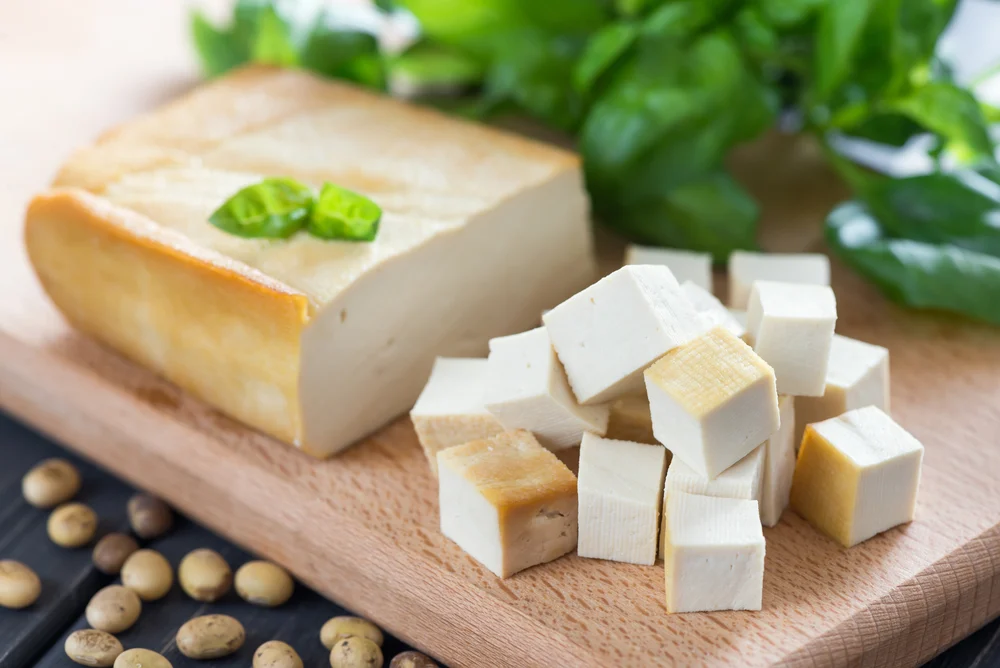
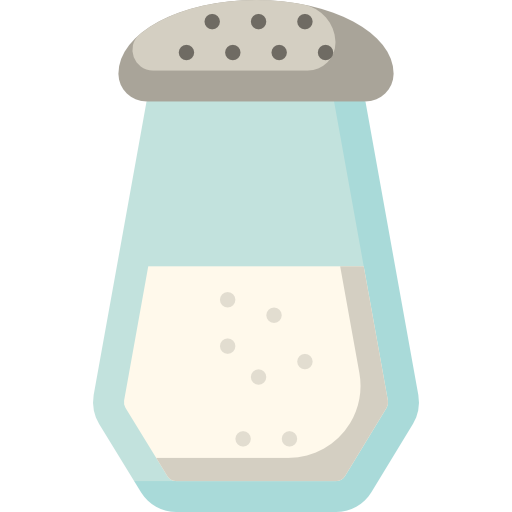

Inicio
Milho
Soja
Receitas
30 anos
Sobre mim
Tofu caseiro

Tempo: 120min
Dificuldade: Médio
Quantidade: 1 porção
Ingredientes
1 xícara de grão de soja
 1 colher de sal amargo
1,2 litros de água.
Modo de preparo
1
Lave bem o grão de soja e deixe de molho por 8 a 10 horas.
2
Escorra e liquidifique o grão com o 1,200 ml de água (pode liquidificar em duas vezes).
3
Coloque em uma panela grande e deixe ferver por 20 a 25 minutos (cuidado quando levanta fervura que pode sujar o fogão).
4
Deixe esfriar e coe com um pano.
5
O líquido é o leite de soja.
6
Coloque no fogo e deixe amornar.
7
Desligue o fogo e coloque 1 colher de sal amargo dissolvido em 1/2 xícara de água.
8
O leite vai coalhar. Deixe esfriar.
9
Faça uma forma com uma caixinha de leite, faça pequenos furos na caixa e forre-a com um pano e coloque a mistura do leite de soja coalhado.
10
Deixe escorrer e esfriar, até pode colocar um peso em cima e depois desenforme.
11
Dicas para o tofu caseiro ficar mais gostoso: em uma frigideira coloque um pouco de óleo e coloque o tofu em fatias, tempere cada fatia com o tempero preferido (sal, salsinha, pimenta ou sazón etc) e deixe dourar. Fica uma delícia.
Avalie esta receita
Avalie
Enviar
Obrigada por avaliar!